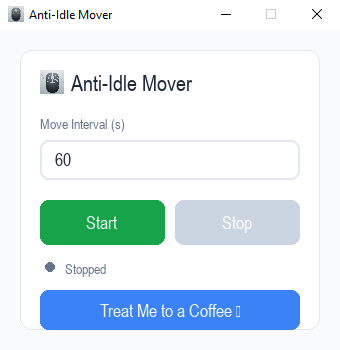

用最簡單的方式，
讓您的電腦保持清醒。
一個輕巧易用的工具，可防止您的電腦進入閒置或睡眠狀態。非常適合避免通訊軟體顯示「離開」，或保持遠端工作階段的連線。
Keep Your Computer Awake, The Simple Way.
A lightweight utility that prevents your computer from going idle. Perfect for avoiding "Away" status on messaging apps or keeping remote sessions active.
免費下載，無需安裝。
Free to download. No installation needed.
